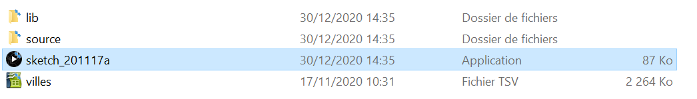

Pour lancer l'application, lancer dans le dossier "application.$OS"( ou $OS est le système exploitation compatible) « sketch_201117a ».
| Touche de clavier | Description |
|---|---|
| → | Permet d’incrémenter la barre de la palette vers les villes avec un rang d'altitude le plus bas |
| ← | Permet de décrémenter la barre de la palette vers les villes avec un rang d'altitude le plus haut |
| ↓ | Incrémente le nombre de populations(soit minimal , soit maximal selon la couleur du carré a coté du texte) |
| ↑ | Décrémente le nombre de populations(soit minimal , soit maximal selon la couleur du carré a coté du texte) |
Maintenir les touches permet d'accélérer l'incrémentation(la décrémentation) d'une valeur
| Image | Noms | Description |
|---|---|---|
| Jauge de filtrage de densité(surface) des villes | Permet de modifier la valeur du filtrage des villes par densités(ou surface) en cliquant sur la jauge :Les villes qui remplissent la condition du filtrage seront affichés dans la carte. La barre représente la condition de la valeur choisie et la jauge (rouge si une ville est choisi actuellement ou vert sinon) représente la valeur de la densité de la ville choisie. De haut en bas de la barre,la valeur maximale jusqu'à une valeur minimale d'une densité de la ville | |
| Palette classé par altitude des villes | En ciblant sur les cases blanches,une ville est sélectionnée et la case change de couleur(rouge si haut classé,magenta si moyennement classé,bleu sinon). Seulement 10 villes sont affichées dans la palette et pour changer d'affichage ,on clique sur la jauge a coté pour déterminer l'intervalle de rang (une barre allant au plus bas affichera le plus haut rang des villes et inversement) |
| Boite de box de condition | Échange la couleur de la boite (vert si elle est en rouge et inversement) en cas de clique.Si la couleur est verte ,la condition passe à "supérieur",sinon ,elle passe à "inférieur" | |
| Ville interagissante | Plus la ville a une grande altitude ,plus elle est cyan .Plus la ville a une très forte densité, plus le triangle est grand.Si la ville est ciblée ,toutes les villes autre que celle ciblée et celle cliqué précédemment deviennent transparents et la cible devient plus ou moins magenta en fonction de l'altitude .Si la cible est cliqué,elle devient complètement rouge et des informations seront affichés .Tous les autres triangles restent transparents a l'exception de la cible cliqué a moins d'avoir cliqué encore une fois sur la même cible . | |
| Zoom de la carte | Zoom ou de-zoom la carte en l'interagissant:si la barre part à gauche ,la carte zoom ,sinon ,elle de-zoome . De gauche à droite ,la valeur est comprise entre 15 et 0 | |
| Pad interagissante de la carte | Lorsque le pad est interagi :il faut bouger les coordonnées de la carte en fonction de la direction entre la souris et le pad |
Note:si une jauge est ciblée sans être cliqué ,elle aura un contour jaune (comme le zoom).si elle est cliqué ,elle aura un contour rouge
| Noms | Caractéristique | Description |
|---|---|---|
| Glisseur(Jauge de filtrage de densité des villes,Jauge de la palette classé par altitude des villes et Zoom de la carte) | Rectangle avec un fond noir suivi d'une jauge rouge ou vert avec une barre gris | Un jauge rouge signifie une action causé par un événement d'affichage de donnée ,Cela permet d'attirer l'attention de l'utilisateur...Si la jauge est verte ,c'est naturel dont ça n'a pas de changement donc on considère que la jauge est au repos. |
| Boite de box de condition | Carre soit rouge ,soit gris | Inspiré du coche verte(valide) et coche rouge(invalide),si c'est valide donc coché ,on regarde uniquement ceux qui ont atteint la valeur choisie et si ce n'est pas valide, on regarde uniquement ceux qui sont en dessous de la valeur choisie(Texte indiquant soit inférieur ou supérieur) |
| Ville interagissante | Triangle de couleur variant de blanc à bleu clair |
Le triangle symbolise à la construction d'un bâtiment . Une ville a plusieurs caractéristiques(ville urbaine ,rurale...) et elle symbolise souvent par la stabilité . Plus la densité de la ville est grande ,plus le triangle est grand représentant une taille de le surface de la ville. le triangle peut être plus bleu clair s'il y a une altitude plus élevé(représentant très souvent le froid ici) que blanc(très souvent répandu avec une altitude de départ voire pas très élevé)...Si un triangle est interagi,il devient rouge (signifiant qu'il a été interagi par l'utilisateur qui demande de l'information mais que les informations de la ville précédente sera écrasée par celle choisie ,d’où la couleur orange du nom de la ville lors d'un clique sur le triangle) |
| Palette classé par altitude des villes | Liste de rectangle avec soit un fond noir ou blanc avec un contour de rouge a bleu | Si une ville est très bien classé ,elle est très forte (d’où le cadre rouge:symbole de la puissance) ,sinon ,elle est faible (dépressif comme le cadre bleu).Pour savoir si une ville est visible sur la carte ,on distingue la font noir auquel les villes ne sont pas visibles(comme dans l'obscurité ) et la font blanc auquel elles le sont(comme la lumière qui permet facilement de la voir) |